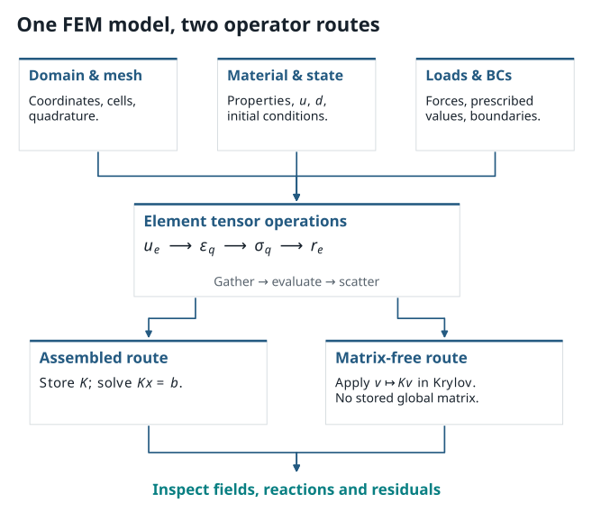

5. From Weak Forms to Discrete Tensors: The PhAST Pipeline#
{kind=link}

Figure 5.1 The finite element pipeline translates physical boundary-value problems into discrete tensor operations, connecting continuous weak forms to PyTorch data structures.#
5.1. Why Tensors? Bridging Traditional FEM with Modern Computing#
In traditional finite element analysis, code is organized around nested loops: iterating over thousands of elements, evaluating shape function gradients at each Gauss quadrature point, and accumulating element matrices into a global sparse system. In Python, explicit nested loops over large meshes are notoriously slow.
Modern scientific machine learning replaces element loops with batched multi-dimensional tensor operations in PyTorch:
Nodal Coordinates: A tensor of shape \((N_{\mathrm{node}}, 2)\) defining the physical position \((x, y)\) of every mesh node.
Element Connectivity: An integer index tensor of shape \((N_{\mathrm{elem}}, 3)\) grouping node IDs into linear triangular (T3) elements.
Shape Function Gradients: A tensor of shape \((N_{\mathrm{elem}}, N_q, 3, 2)\) holding the spatial derivatives \(\nabla N_i\) at all \(N_q\) quadrature points.
Element Strains & Stresses: Evaluated across the entire mesh simultaneously using tensor contractions (
torch.einsum), running seamlessly on multi-core CPUs and GPUs!
By representing the continuum problem as a computational tensor graph, the simulation pipeline becomes fast, vectorized, and inherently differentiable.
5.2. Defining the Boundary-Value Problem#
Every computational mechanics simulation begins with a well-posed boundary-value problem:
Domain Geometry (\(\Omega\)): The specimen dimensions, material boundaries, and initial notch geometry.
Boundary Conditions: Prescribed displacements \(\bar{u}\) on Dirichlet boundaries \(\Gamma_u\), and applied tractions \(\bar{t}\) on Neumann boundaries \(\Gamma_t\):
\[ u = \bar{u} \quad \text{on } \Gamma_u, \qquad \boldsymbol{\sigma}\cdot\mathbf{n} = \bar{t} \quad \text{on } \Gamma_t. \]Precrack Representation: Whether a notch is modeled as a geometric cut or an initial seeded damage field (\(d_0 = 1\) along the notch line).
Physical Discretization: The characteristic element size \(h\), ensuring the mesh can resolve the phase-field regularisation width (\(h < \ell\)).
State how the notch is represented: a prescribed initial damage field or a geometric cut. These choices encode different computational objects and can produce visually similar pictures.
5.3. From cells to fields#
For a two-dimensional mesh, common arrays are:
coordinates \(X\in\mathbb{R}^{N_{\mathrm{node}}\times2}\);
cell connectivity \(C\in\{0,\ldots,N_{\mathrm{node}}-1\}^{N_{\mathrm{cell}}\times n_e}\);
nodal displacement \(U\in\mathbb{R}^{N_{\mathrm{node}}\times2}\); and
nodal damage \(D\in\mathbb{R}^{N_{\mathrm{node}}}\).
The cell connectivity identifies which rows of \(X\), \(U\), and \(D\) belong to each element; the field arrays store the corresponding values. For an element \(e\) with local nodes \(a\), finite-element interpolation takes the form
Differentiating the shape functions maps nodal displacement to strain. In matrix notation at one quadrature point,
The element residual is computed by integrating the weak form. A schematic mechanical contribution is
Assembly scatters each local residual into the appropriate entries of the global residual. The same operation can be expressed with index operations, scatter-adds, or framework-specific sparse primitives.
5.4. Tensor shapes are part of the model contract#
Write expected shapes next to a tensor operation. For example, with batched cells and quadrature points, an implementation might use:
cell coordinates: \((N_{\mathrm{cell}}, n_e, 2)\);
shape-function gradients: \((N_{\mathrm{cell}}, N_q, n_e, 2)\);
gathered displacement: \((N_{\mathrm{cell}}, n_e, 2)\);
strain or stress: \((N_{\mathrm{cell}}, N_q, n_{\varepsilon})\); and
quadrature weights: \((N_{\mathrm{cell}}, N_q)\).
The exact ordering is a convention. A transpose that preserves the total number of entries can still mix components, cells, and quadrature points. Use small assertions and one element-level hand calculation before relying on a large field plot.
Indexing check
Select one cell and one quadrature point. Write the gathered nodal values, shape gradients, strain, stress, and residual contribution on paper. If those five objects agree with the tensor code, then vectorising over cells has a clear reference calculation.
5.5. Assembled and matrix-free routes#
For a linearised subproblem, an assembled finite-element method forms a global matrix
and solves \(Kx=b\) or a linearised residual equation. \(A_e\) symbolically represents the local-to-global map.
A matrix-free method implements the action
by gathering \(v\) to elements, applying local operations, and scattering contributions back. An iterative Krylov solver can use this implicit representation of \(K\).
Matrix-free evaluation uses local operator actions and associated element data. Its cost depends on residual/Jacobian actions, preconditioning, data movement, and stopping criteria. Compare memory use and runtime at matched physics, mesh, tolerance, and reported observable.
5.6. Static and dynamic arrays#
In a quasistatic calculation, the state often consists primarily of \(U\) and \(D\). A dynamic calculation adds at least velocity and acceleration or their time-integration equivalents. A schematic time step must then track
The update rules for these arrays express inertia and affect the computed path. A sequence of prescribed displacement increments represents load stepping; a dynamic calculation also evolves the inertial state.
5.7. Where automatic differentiation fits#
PyTorch provides tensors and a reverse-mode automatic-differentiation system. The user or a library defines mesh data, interpolation, constitutive response, residuals, boundary conditions, and solver behaviour.
JAX likewise provides array transformations such as differentiation, compilation, and vectorisation. JAX-FEM is an additional finite-element library built on that ecosystem and includes worked mechanics examples. A suitable choice depends on the existing solver, device support, reproducibility needs, and whether the relevant operations are differentiable in the intended computation.
See the official PyTorch autograd documentation, the JAX automatic-differentiation guide, and the JAX-FEM quickstart.
5.8. Inspecting results: four views, one interpretation#
For a tiny evolving-fracture run, inspect at least:
the geometry, mesh, and loading direction;
displacement or deformed configuration with a stated scale factor;
damage field with a labelled colour range and the \(d=0\)/\(d=1\) convention; and
a scalar observation such as reaction force, energy term, or residual.
5.9. Hands-On Lab: Running an End-to-End PhAST Fracture Simulation#
In the accompanying computational notebook, you will execute a complete phase-field fracture calculation using the PhAST solver:
Geometry & Meshing: Generate a two-dimensional rectangular specimen and discretize it with structured triangular (T3) finite elements.
Boundary Conditions & Precrack: Identify boundary node sets (
left,right,top,bottom) and define an initial center-notch precrack.Solver Execution: Run the staggered displacement-damage solver over 60 incremental load steps.
Post-Processing & Field Visualization: Extract the global load-displacement curve, observe peak softening, and render the localized diffuse damage field.
Hands-On Tutorial: Lab 01 (End-to-End PhAST Fracture Simulation)
Ready to try this in practice?
Explore the interactive tutorial: Run and interpret a small PhAST fracture calculation.
You can read through the full simulation pipeline and damage field plots directly here in the book, or run it interactively in Google Colab with one click:
This notebook serves as our reference simulation pipeline throughout the course. You will see how tensor representations map directly to physical finite element fields.
5.10. Exercise: identify a silent shape error#
A tensor containing displacement at cell nodes has shape \((N_{\mathrm{cell}},n_e,2)\). A tensor of shape-function gradients has shape \((N_{\mathrm{cell}},N_q,n_e,2)\). Which new axes must be aligned or introduced before forming a displacement gradient at every quadrature point, and what physical quantity should you recover for an affine displacement field?
Solution
The nodal displacement needs a quadrature axis, for example by treating it as \((N_{\mathrm{cell}},1,n_e,2)\), so that it aligns with the \(N_q\) axis of the shape gradients. Contract the local-node axis and preserve the displacement component and spatial-derivative axes according to the chosen convention. For an affine displacement field, the displacement gradient and its symmetric strain should be constant across all elements and quadrature points (up to round-off). This is an excellent first unit test. The PhAST lesson makes the mesh, nodal fields, and boundary labels visible; this one-element affine test remains the right additional check before treating a vectorised tensor route as trustworthy.
5.11. Take-away#
Tensors make data movement and differentiation explicit. The finite-element description specifies what is interpolated, where it is integrated, how boundary conditions are enforced, and how the resulting field is checked.